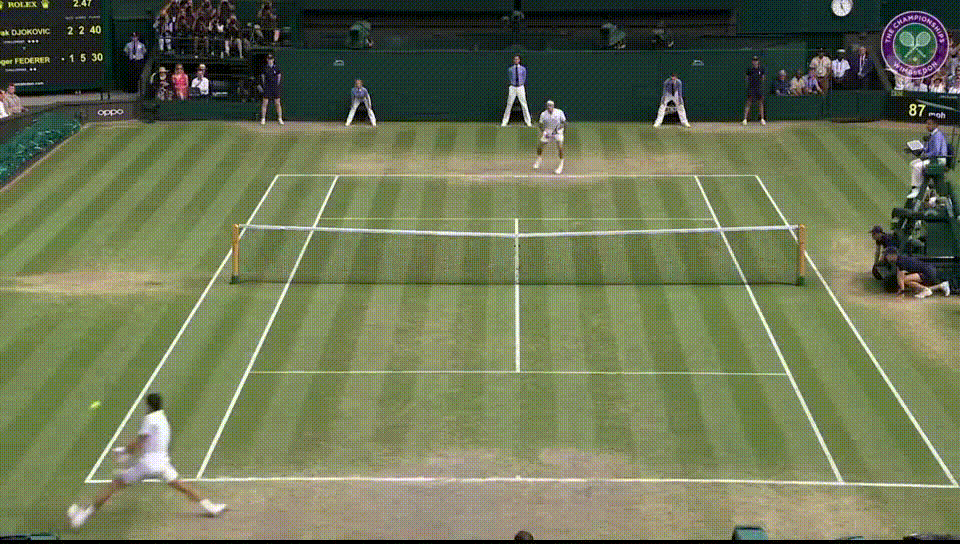
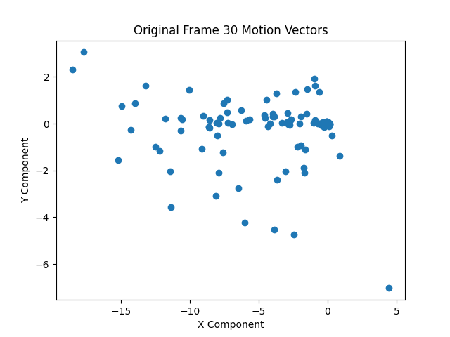
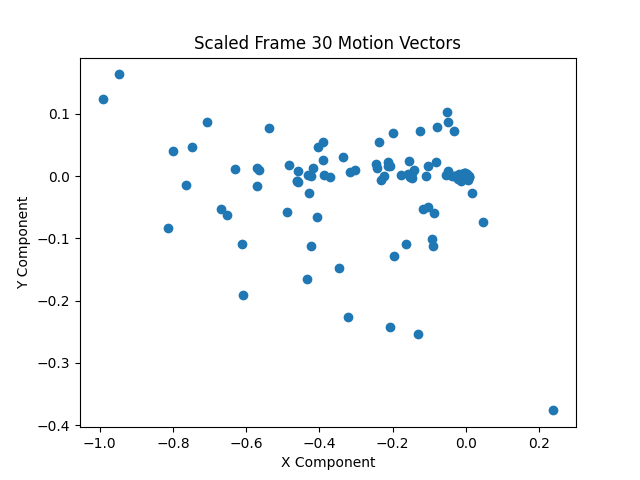
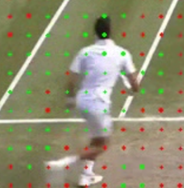
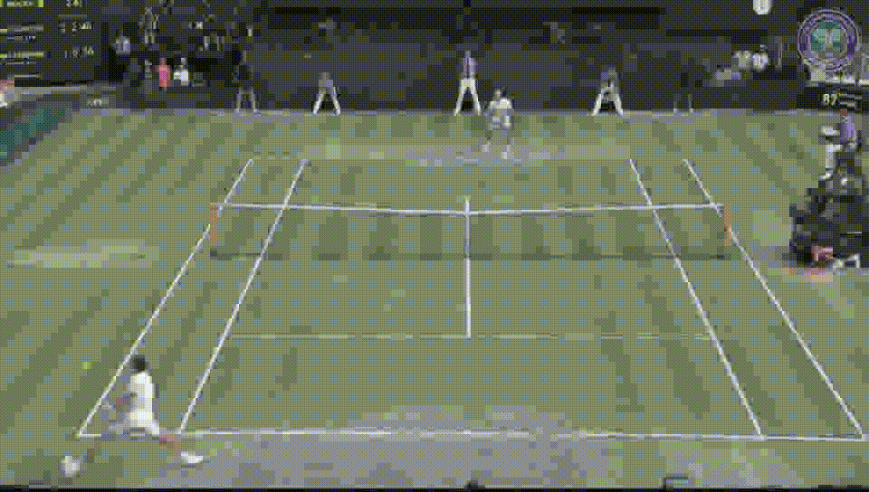
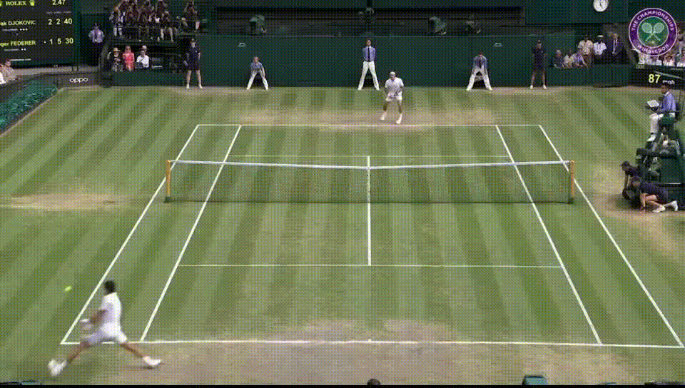

Foreground/Background Segmentation and Compression Project
Introduction
For the final project of my "Multimedia System Design" class at USC, I worked with a partner on a "smart" video compression project. The basic idea was that people pay less attention to the background of videos compared to the foreground, so you can get away with higher but lossier compression for parts of video frames that are the background as opposed to the foreground. However, this requires being able to segment the foreground and background regions of each frame.
My role in the project was mainly to write code that did the foreground/background segmentation. It worked as follows.
How it works
The project instructions recommended we divide each frame into 16x16 pixel regions called "macroblocks", compute motion vectors for each macroblock, and then figure out a way to use the computed motion vectors to determine which macroblocks were part of the foreground and which were part of the background. The fundamental concept was that things in the foreground would likely be moving differently from the background, such as people walking along a static background, and so you could differentiate between the two simply by their motion vectors.
This was by no means a perfect method. To begin with, the foreground and background do not always have different motion vectors. Additionally, a 16x16 pixel block may sometimes contain pixels from both the foreground and the background. Despite these problems, this method did work well at times, as we shall see.
First off, here is the video we will be using as a demo.
On the recommendation of my partner, the first thing we did before computing the motion vectors was blur each frame with a Gaussian filter, which seemed to help with motion vector computation by reducing noise. After that, pixel motion between each frame was computed using OpenCV's calcOpticalFlowFarneback function, which uses an algorithm created by Gunnar Farneback to calculate optical flow. The motion vectors of the pixels in each macroblock were averaged to get a motion vector for each macroblock. Below is an example of the motion vectors calculated for the 30th frame of the sample video.
While the motion vectors might look rather scattered without a discernible "cluster" belonging to background motion vectors, keep in mind each frame has 2040 motion vectors in this example. Thus, most of the background vectors are in the small "cloud" concentrated around (0, 0), and make up the vast majority of all of the motion vectors.
The nature of the motion vectors will vary between videos. If there is a lot of fast motion in a particular video, the motion vectors might have much larger magnitudes on average. In order to make the algorithm a bit more video agnostic, the motion vectors are rescaled.
Rescaling the vectors of the sample video's 30th frame gives us the following motion vectors.
We then use agglomorative clustering to find clusters of motion vectors. We make the naive assumption that the largest cluster is composed of background motion vectors. Doing so for all motion vectors in the video and drawing the motion vectors onto the video yields the following result. Note that the motion vectors of macroblocks deemed part of the foreground are colored green, and those of macroblocks deemed part of the background are colored red.

This is a pretty good result, but there are a few problems. For one, there are frames where motion vectors that should be part of the background suddenly flash green, and then become red again in the next frame. This might be due to noise in the calculated optical flows of individual pixels. Another issue can be seen in the following image.
We see there are clearly some motion vectors, such as those at the legs of the tennis player, that are classified as red background motion vectors when they should be green foreground motion vectors. Even some small groups of motion vectors that have been classified as "background" are surrounded by motion vectors classified as "foreground". This seems a bit strange. This could be due to noise in the original optical flow calculation, or poor tuning of hyperparameters in the optical flow calculation or the clustering algorithm. One other possibility that could lead to this issue in some cases is the homogeneity of color in an object. Optical flow algorithms look at a pixel in some frame and try to find where that pixel went in the next frame. If an image, for example, consists of entirely red pixels except for one blue pixel, and that blue pixel moves slightly between frame n and frame n+1, it is easy to calculate the motion of that blue pixel. You could just search for where the blue pixel is in frame n+1 in a small neighborhood around where the pixel originally was in frame n, since objects tend to not move huge distances between frames. However, if you have a large blue square in the image and it moves slightly between frames n and n+1, how do you find the optical flow of the pixels in the blue square? A blue pixel in the center of the square will have another pixel nearby in the square take its place after the move. In fact, the neighborhood around where that pixel was will probably look entirely the same in frame n+1. An entirely blue region of the square will just move in to replace the old entirely blue region. It will be difficult to detect movement anywhere but the edges of the square, since there will be almost no visual change between frames outside of those regions.
To solve the issue, we did the following. For each frame, we ran agglomorative clustering on the
One other problem that needed to be resolved was the occassional "flashes" of green or red seen in the motion vector video. Likely due to noise in the optical flow calculation, large swaths of background macroblocks would sometimes be misclassified as foreground macroblocks in a single frame before again correctly being classified as background macroblocks in the next frame. The oppositie would also happen for foreground macroblocks. To solve this, we simply made a rule that if a macroblock is classified as background in frames n-1 and n+1 but foreground in frame n, then its classification in frame n will be set to background. If a macroblock is classified as foreground in frames n-1 and n+1, but background in frame n, then we switch its classification in frame n to foreground. We called this "interframe foreground status correction", because it relies on information across multiple frames to correct the foreground status of macroblocks in a single frame.
First applying intraframe then interframe foreground status corrections, we get the following result.

This is a great result!
Results
Using the above seen foreground/background macroblock classifications, we can highly compress the background macroblocks to get the following result.
This compression is a bit too obvious. If we do not compress background macroblocks as as much, we get the following.
Thank you so much for reading!